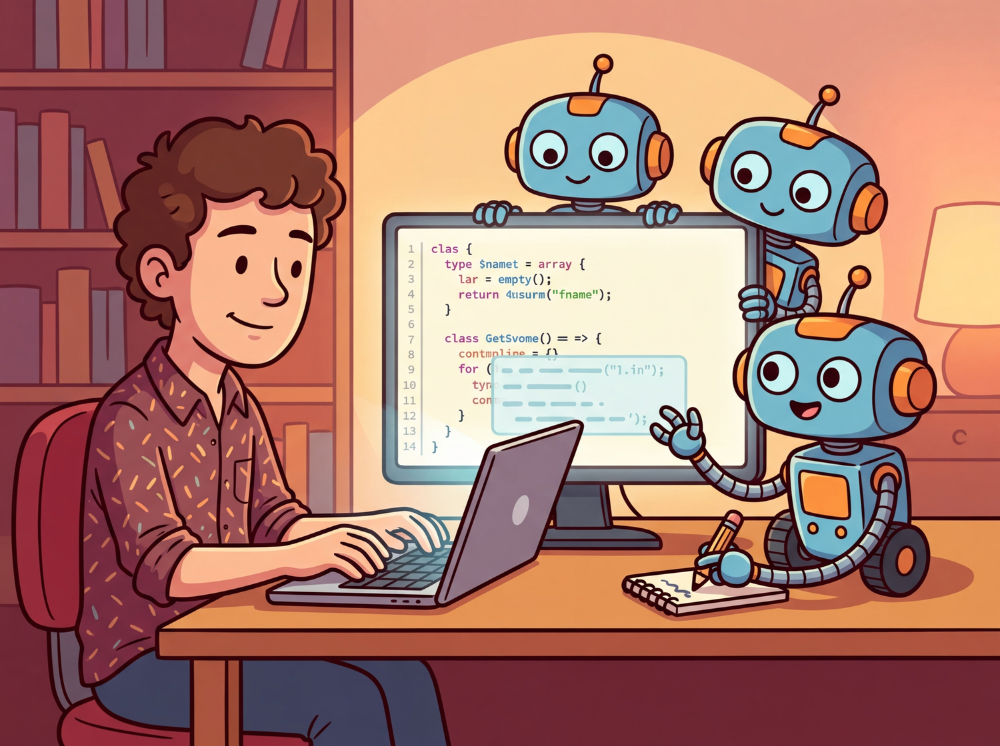

"The best code is the code you never had to write yourself. The second best is code you wrote with an AI that understood your codebase."
Deploy AI Agent

Prerequisites
This section assumes familiarity with LLM capabilities from Section 07.1 and prompt engineering from Section 11.1. Understanding code agent patterns from Section 22.4 provides the architectural foundation for these tools.
Software engineering is being fundamentally reshaped by LLMs. "Vibe-coding" describes the emerging practice where developers describe what they want in natural language and AI writes the implementation. This ranges from inline code completion (Copilot, Cursor) through agentic coding assistants that execute multi-file changes (Claude Code, Devin) to full application generators that produce working apps from descriptions (Bolt, v0, Lovable). Understanding these tools, their architectures, and their limitations is essential for any developer working in the LLM era. The code agent patterns from Section 22.4 provide the architectural foundation for these tools.
1. Code Completion and Fill-in-the-Middle Intermediate
The simplest form of AI-assisted coding is inline completion: the developer writes code, and the model predicts what comes next. Modern code completion goes beyond simple next-token prediction with Fill-in-the-Middle (FIM), where the model sees both the code before and after the cursor position. This allows it to generate code that fits seamlessly into existing context rather than just appending to the end.
In the SWE-bench benchmark, the best AI coding agents solve about 50% of real GitHub issues. For context, the average human developer spends 30 minutes just understanding the issue before writing a single line.
FIM Architecture
FIM works by rearranging the input during training. A code file is split into a prefix (before cursor), a middle (the target), and a suffix (after cursor). The model receives <PRE> prefix <SUF> suffix <MID> and learns to predict the middle section. This format, sometimes called PSM (Prefix-Suffix-Middle), teaches the model to generate code that is syntactically and semantically consistent with both surrounding contexts. Models like StarCoder, DeepSeek-Coder, and Codestral are trained with FIM from the start.
Figure 28.1.1 illustrates the Fill-in-the-Middle approach. Code Fragment 28.1.1 below puts this into practice.
# Using a FIM model directly (DeepSeek-Coder example)
from transformers import AutoTokenizer, AutoModelForCausalLM
model_id = "deepseek-ai/deepseek-coder-6.7b-base"
tokenizer = AutoTokenizer.from_pretrained(model_id)
model = AutoModelForCausalLM.from_pretrained(model_id, torch_dtype="auto", device_map="auto")
# FIM format: prefix + suffix, model fills the middle
prefix = """def binary_search(arr, target):
left, right = 0, len(arr) - 1
while left <= right:
"""
suffix = """
if arr[mid] == target:
return mid
elif arr[mid] < target:
left = mid + 1
else:
right = mid - 1
return -1"""
# DeepSeek FIM tokens
fim_input = "<|fim_begin|>" + prefix + "<|fim_hole|>" + suffix + "<|fim_end|>"
inputs = tokenizer(fim_input, return_tensors="pt").to(model.device)
outputs = model.generate(**inputs, max_new_tokens=50)
print(tokenizer.decode(outputs[0], skip_special_tokens=True))2. AI-Native IDEs and Coding Assistants Intermediate
The coding assistant landscape has evolved from simple autocomplete plugins into full AI-native development environments. These tools integrate LLM capabilities deeply into the editing experience, providing not just completions but also chat-based code editing, codebase-aware context, and multi-file refactoring.
| Tool | Type | Key Feature | Context Strategy |
|---|---|---|---|
| GitHub Copilot | IDE Plugin | Inline completion, chat | Open files, neighboring tabs |
| Cursor | AI-native IDE | Cmd+K edit, Composer | Codebase indexing, @-mentions |
| Windsurf | AI-native IDE | Cascade flows | Proactive context gathering |
| Cline | VS Code Extension | Agentic file editing | Tool use, file search |
| Claude Code | CLI Agent | Terminal-native agentic | Full repo access, bash tools |
The quality of AI code generation depends heavily on the context provided to the model. Context engineering for coding involves: selecting the right files to include (open tabs, imports, related chapters), providing project-specific conventions (via rules files or system prompts), including relevant documentation, and managing the context window budget effectively. Tools like Cursor's @codebase command and Claude Code's CLAUDE.md files let developers control exactly what context the model sees, dramatically improving output quality for project-specific tasks.
The spectrum from code completion to autonomous coding agents reflects a fundamental trade-off between speed and correctness. Inline completion (Copilot) is fast (~200ms) but context-limited; it works best for predictable, pattern-based code within a single file. IDE-level assistants (Cursor, Windsurf) have broader context and can make multi-file changes but require more user guidance. Fully agentic tools (Claude Code, Devin) can autonomously navigate codebases, run tests, and debug, but take longer and cost more per task. The right tool depends on the task: use completion for boilerplate, IDE assistants for feature implementation, and agents for complex refactoring or bug fixes that require codebase exploration. Many professional developers use all three in the same session, switching between them based on task complexity. The code agent architecture from Section 25.1 explains why the agentic tier is so effective at solving complex coding tasks.
3. Agentic Coding Intermediate
Agentic coding represents the next evolution: instead of suggesting completions that a developer accepts or rejects, the AI operates as an autonomous agent that can read files, write code, run tests, debug errors, and iterate until a task is complete. The developer provides a high-level description and the agent handles the implementation details.
How Agentic Coding Tools Work
Agentic coding tools follow a plan-execute-observe loop. The LLM receives a task description and access to tools (file read/write, terminal execution, search). It plans an approach, executes code changes, runs tests to verify, observes errors, and iterates. This is fundamentally the ReAct pattern (Chapter 22) applied to software engineering. The key differentiator between tools is how they manage context, what tools they expose, and how autonomously they operate. Figure 28.1.3 shows the agentic coding loop. Code Fragment 28.1.2 below puts this into practice.
# Simplified agentic coding loop (conceptual)
from openai import OpenAI
import subprocess, json
client = OpenAI()
def coding_agent(task: str, max_iterations: int = 5):
tools = [
{"type": "function", "function": {
"name": "read_file",
"parameters": {"type": "object", "properties": {"path": {"type": "string"}}}}},
{"type": "function", "function": {
"name": "write_file",
"parameters": {"type": "object", "properties": {
"path": {"type": "string"}, "content": {"type": "string"}}}}},
{"type": "function", "function": {
"name": "run_command",
"parameters": {"type": "object", "properties": {"cmd": {"type": "string"}}}}},
]
messages = [{"role": "system", "content": "You are a coding agent. Use tools to complete the task."},
{"role": "user", "content": task}]
for i in range(max_iterations):
response = client.chat.completions.create(
model="gpt-4o", messages=messages, tools=tools
)
msg = response.choices[0].message
messages.append(msg)
if not msg.tool_calls:
return msg.content # Task complete
for tc in msg.tool_calls:
result = execute_tool(tc.function.name, json.loads(tc.function.arguments))
messages.append({"role": "tool", "tool_call_id": tc.id, "content": result})4. Code Generation from Specifications Intermediate
A new category of tools generates complete applications from high-level descriptions. Bolt.new, Vercel's v0, and Lovable let users describe an app in natural language and receive a working, deployable application. These tools combine LLM code generation with scaffolding templates, component libraries, and deployment infrastructure to bridge the gap between description and running software.
SWE-bench: Evaluating Coding Agents
SWE-bench provides a rigorous benchmark for evaluating coding agents on real software engineering tasks. It collects actual GitHub issues from popular Python repositories along with their corresponding pull requests. The agent receives the issue description and must produce a patch that passes the repository's test suite. SWE-bench Verified (a human-validated subset of 500 problems) is the standard evaluation set, with top agents scoring around 50 to 60% as of early 2026. Code Fragment 28.1.3 below puts this into practice.
# Evaluating an agent on SWE-bench (conceptual)
from swebench.harness.run_evaluation import run_evaluation
results = run_evaluation(
predictions_path="predictions.json", # Agent's generated patches
swe_bench_tasks="princeton-nlp/SWE-bench_Verified",
log_dir="./eval_logs",
timeout=900,
)
print(f"Resolved: {results['resolved']} / {results['total']}")
print(f"Pass rate: {results['resolved'] / results['total'] * 100:.1f}%")AI-generated code carries real risks. Security vulnerabilities are common: models may generate code with SQL injection, hardcoded secrets, or insecure defaults. Subtle logic errors can pass tests but fail in production. Over-reliance on AI code can erode a developer's understanding of the codebase. License compliance is another concern, as models trained on open-source code may reproduce copyleft-licensed patterns. Always review AI-generated code carefully, maintain comprehensive test suites, and use static analysis tools as a safety net.
The most effective AI-assisted coding workflow is not "let the AI write everything" but rather a collaborative loop where the developer provides high-level direction, domain knowledge, and quality judgment while the AI handles boilerplate, implementation details, and repetitive refactoring. The developer's role shifts from writing every line to specifying intent, reviewing outputs, and maintaining architectural coherence. This is why context engineering (providing the right project files, conventions, and constraints to the model) is becoming as important as traditional coding skills.
Setting up CLAUDE.md and rules files for team-wide consistency. The most impactful productivity gain from coding assistants comes from configuring project-level context files that encode your team's conventions. Create a CLAUDE.md (for Claude Code) or .cursorrules (for Cursor) at the repository root with: (1) the project's architecture overview and module boundaries; (2) coding style rules (naming conventions, error handling patterns, test structure); (3) a list of prohibited patterns (e.g., "never use any type in TypeScript," "always use parameterized queries"); (4) preferred libraries and their import paths. These files are included in every LLM context window automatically, acting as persistent instructions that prevent the model from generating code that violates project standards. Teams report 40 to 60% fewer review comments on AI-generated code after adopting well-maintained rules files. For monorepos, place module-specific rules in subdirectories to give the model context-appropriate guidance.
Show Answer
Show Answer
Show Answer
Show Answer
Show Answer
Who: Backend engineering team at a fintech startup
Situation: The team needed to migrate 200,000 lines of Python 2 code to Python 3, including updating deprecated libraries, fixing type annotations, and rewriting async patterns.
Problem: Manual migration was estimated at 6 engineer-months. Automated tools like 2to3 handled syntax changes but missed semantic differences, library API changes, and test updates.
Dilemma: Using an agentic coding tool for bulk changes risked introducing subtle bugs in financial calculation logic, but file-by-file human review of every change was impractical at this scale.
Decision: The team used Claude Code in an iterative workflow: the agent proposed changes per module, ran the existing test suite, and flagged files where tests failed for human review.
How: They organized the migration by module priority, configured the agent with project-specific conventions, and used a test-driven loop where the agent iteratively fixed failures. Financial calculation chapters received mandatory human review regardless of test results.
Result: The migration completed in 5 weeks instead of 6 months. The agent handled 85% of files autonomously (verified by passing tests), while engineers focused review time on the 15% that required judgment about business logic correctness.
Lesson: Context engineering (clear conventions, test-driven validation, and strategic human review for high-risk chapters) is what makes AI-assisted development reliable for large-scale codebases.
For your first LLM application, use a single prompt with a single model call. Add RAG, agents, or multi-step pipelines only when you have evidence that the simple approach fails. Complexity is easy to add but hard to debug and maintain.
Key Takeaways
- Fill-in-the-Middle (FIM) models see both prefix and suffix context, generating code that fits seamlessly into existing files rather than just appending at the end.
- AI-native IDEs (Cursor, Windsurf) integrate LLMs deeply into the development workflow with codebase indexing, chat-based editing, and multi-file refactoring.
- Agentic coding tools (Claude Code, Devin, SWE-Agent) operate autonomously using a plan-execute-observe loop with file and terminal access.
- App generators (Bolt, v0, Lovable) produce complete working applications from natural language descriptions, targeting the rapid prototyping use case.
- SWE-bench provides a rigorous evaluation of coding agents on real GitHub issues, with top agents resolving 50 to 60% of verified problems.
- Context engineering (selecting the right files, conventions, and constraints) is becoming as important as traditional coding skills for effective AI-assisted development.
Autonomous Software Engineering is advancing rapidly. OpenAI's o3 and Anthropic's Claude 4 push SWE-bench Verified scores toward 70%, while new benchmarks like SWE-bench Multimodal (2025) test agents on front-end, mobile, and infrastructure tasks beyond Python. Research into formal verification of AI-generated code (combining LLM generation with proof assistants) aims to guarantee correctness for safety-critical systems. Meanwhile, companies like Cognition (Devin) and Factory are exploring fully autonomous software engineering agents that handle entire feature requests from specification to deployment, raising questions about the future role of human developers in the loop.
Exercises
Explain how fill-in-the-middle (FIM) code completion works. How does it differ from standard left-to-right text generation, and why is FIM particularly useful for code editing?
Answer Sketch
Standard generation predicts the next token from left to right. FIM rearranges the input as [prefix] [suffix] [middle], training the model to generate the middle portion given surrounding context. This is crucial for code editing because developers often need to insert code between existing lines, not just append at the end. FIM enables inline completions, function body generation, and gap filling.
Describe the architecture of a coding assistant like Copilot or Cursor. How does it capture context from the IDE, send it to the model, and present suggestions to the developer?
Answer Sketch
The IDE extension captures: current file content, cursor position, open files, recent edits, and project structure. It sends a context-optimized prompt (current file with cursor marker, relevant snippets from other files) to the model. Suggestions are returned and displayed as inline ghost text or in a sidebar. The system uses debouncing to avoid sending requests on every keystroke and caching to speed up repeated patterns.
Write a prompt template for an agentic coding workflow where the AI reads a feature specification, searches the existing codebase for relevant files, generates the implementation, and writes tests.
Answer Sketch
The prompt should instruct the agent to: (1) read the spec and identify required changes, (2) use a search tool to find related files and understand existing patterns, (3) plan the implementation (which files to create/modify), (4) generate code following existing style conventions, (5) write tests that cover the new functionality. Include constraints: do not break existing tests, follow the project's coding standards, and explain each file change.
Write a Python function that takes a git diff and uses an LLM to review the code changes, identifying potential bugs, style issues, and security concerns. Return structured feedback.
Answer Sketch
Parse the diff to extract changed files and line ranges. Construct a prompt that includes the diff and asks the model to review for: correctness (logic errors), security (injection, hardcoded secrets), performance (unnecessary loops, N+1 queries), and style (naming, formatting). Parse the response into a structured format: [{file, line, severity, category, message}]. Filter for actionable findings only.
A junior developer uses AI to generate 80% of their code without reviewing it carefully. What risks does this create, and what processes should the team implement to maintain code quality?
Answer Sketch
Risks: undetected bugs, security vulnerabilities, code the developer cannot maintain or debug, inconsistent architecture decisions, and accumulating technical debt. Processes: mandatory code review by a senior developer, comprehensive test requirements (if the developer cannot write tests for the code, they do not understand it), regular architecture reviews, and pairing sessions where the developer explains the AI-generated code to ensure understanding.
What Comes Next
In the next section, Section 28.2: LLMs in Finance & Trading, we explore LLMs in finance and trading, covering market analysis, risk assessment, and automated financial reasoning.
Bibliography
Jimenez, C.E., Yang, J., Wettig, A., et al. (2024). "SWE-bench: Can Language Models Resolve Real-World GitHub Issues?" arXiv:2310.06770
Bavarian, M., Jun, H., Tezak, N., et al. (2022). "Efficient Training of Language Models to Fill in the Middle." arXiv:2207.14255
Yang, J., Jimenez, C.E., Wettig, A., et al. (2024). "SWE-agent: Agent-Computer Interfaces Enable Automated Software Engineering." arXiv:2405.15793
Cursor. (2024). "Cursor: The AI Code Editor." https://www.cursor.com/
Anthropic. (2025). "Claude Code: An Agentic Coding Tool." https://docs.anthropic.com/en/docs/claude-code